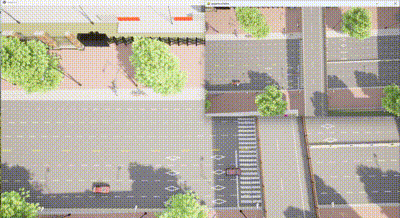

车辆按地图选点进行移动
此示例支持在 pygame 窗口对显示区域进行车辆生成并进行移动。
环境依赖
- python 3.7.9
- carla 0.9.15
- 湖工商场景(WindowsNoEditor)
- 运行 locate_moving.py
CarlaSimulator 类
该类主要完成设置相机、处理相机图像、将Pygame坐标转换为CARLA世界坐标。
函数初始化__init__
初始化函数，设置模拟器窗口的宽度和高度，连接CARLA服务器，并获取世界和蓝图库。
def __init__(self, width, height):
self.width = width
self.height = height
self.client = carla.Client('localhost', 2000)
self.client.set_timeout(10.0)
self.world = self.client.get_world()
self.blueprint_library = self.world.get_blueprint_library()
self.vehicle_bp = self.blueprint_library.filter('vehicle.*')[0]
self.camera = None
self.vehicles = []
self.fov = VIEW_FOV
setup_camera函数
设置相机，定义相机的蓝图、分辨率、视场角（FOV），并将相机生成在指定的位置和角度。
def setup_camera(self):
camera_bp = self.blueprint_library.find('sensor.camera.rgb')
camera_bp.set_attribute('image_size_x', str(self.width))
camera_bp.set_attribute('image_size_y', str(self.height))
camera_bp.set_attribute('fov', str(self.fov))
camera_transform = carla.Transform(carla.Location(x=0, y=0, z=50), carla.Rotation(yaw=270, pitch=-90))
self.camera = self.world.spawn_actor(camera_bp, camera_transform)
process_image函数
处理相机捕获的图像，将其转换为Pygame可显示的格式。
def process_image(self, image):
array = np.frombuffer(image.raw_data, dtype=np.uint8)
array = array.reshape((self.height, self.width, 4))
array = array[:, :, :3] # Remove alpha channel
array = array[:, :, ::-1] # Convert BGR to RGB
surface = pygame.surfarray.make_surface(array.swapaxes(0, 1))
return surface
convert_pygame_to_world函数
将Pygame窗口中的坐标转换为CARLA世界坐标。主要通过相机的视角和Pygame窗口的大小进行计算。
def convert_pygame_to_world(self, x, y):
cam_transform = self.camera.get_transform()
cam_loc = cam_transform.location
aspect_ratio = self.width / self.height
camera_fov_rad = np.radians(self.fov)
camera_fov_y = 2 * np.arctan(np.tan(camera_fov_rad / 2) / aspect_ratio)
world_units_per_pixel_x = (2 * cam_loc.z * np.tan(camera_fov_rad / 2)) / self.width
world_units_per_pixel_y = (2 * cam_loc.z * np.tan(camera_fov_y / 2)) / self.height
relative_x = (x - self.width / 2) * world_units_per_pixel_x
relative_y = (y - self.height / 2) * world_units_per_pixel_y
world_x = cam_loc.x + relative_x
world_y = cam_loc.y - relative_y
return world_x, world_y
run函数
运行模拟器，初始化Pygame窗口，设置相机监听器，并处理Pygame事件，如点击事件生成车辆。
def run(self):
pygame.init()
display = pygame.display.set_mode((self.width, self.height), pygame.HWSURFACE | pygame.DOUBLEBUF)
clock = pygame.time.Clock()
self.setup_camera()
self.camera.listen(lambda image: display.blit(self.process_image(image), (0, 0)))
running = True
while running:
for event in pygame.event.get():
if event.type == pygame.QUIT:
running = False
elif event.type == pygame.MOUSEBUTTONDOWN:
x, y = event.pos
world_x, world_y = self.convert_pygame_to_world(x, y)
spawn_point = carla.Transform(carla.Location(x=world_x, y=-world_y, z=1), carla.Rotation())
vehicle = self.world.spawn_actor(self.vehicle_bp, spawn_point)
vehicle.set_autopilot()
self.vehicles.append(vehicle)
pygame.display.flip()
clock.tick(30)
for vehicle in self.vehicles:
vehicle.destroy()
self.camera.destroy()
pygame.quit()
